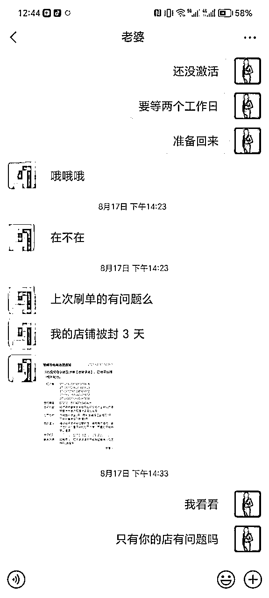
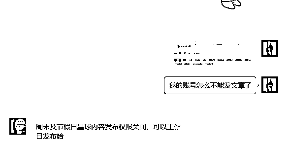

来源：https://paqni5a8o81.feishu.cn/docx/TJqudHwrRoI1kVxi8tOcAqC9nRc
大家好，我是潇洒哥，今年三月加入生财的新人，今年七月份第一次发帖有幸被评为精华帖，也给了我很大的鼓励，上篇帖子具体可以移步我上次分享的链接 。最近几个月一直忙着店铺的事情也很久没有来生财了，其实早就想分享了，但是一直没时间，趁着最近周末比较空闲一点，也很久没有梳理前段时间的经历了，也借这次分享顺便给自己复盘一下。今天给大家带来的分享主题是从8月份视频号小店全部被永久封禁，到11月份视频号小店做到月入10万实操心得及方法。下面是最近一个月有销售数据的店铺截图，除去退款总的有效销售额50W出头,毛利控制在20%左右，有一部分产品利润在25-30之间，总毛利润在10W出头，勉强做到月入10万吧。
我上次发帖是7月份的时候，那个时候店铺整体已经趋于稳定，也链接到了一些圈友进行了一些探讨和交流，给我提了一些很好的建议，我这边也对业务模式和人员分工进行了一些优化，在7月底的时候又招聘了两个店铺运营和一个视频剪辑，团队规模扩大到了6个人，打算在继续稳住店铺基本盘，以店铺的利润做为支撑，开始发力短视频和直播方向。但是在8月7号发生了一个很突然的事情，我记得那天是计划要直播的，我发了个视频有要爆的迹象，然后我把自己店铺链接挂到橱窗里面，准备开播的时候提示没有商品，感到有点奇怪，然后这个时候再去看店铺，发现公司主体下面五个店铺全部被封禁，所有商品全部被下架，而且从字面意思上看应该是永久封禁，下面是两个主力店铺被封截图。
当时整个人是处于一个很懵的状态，一切来的很突然。一下子没有办法接受，不敢相信是真的，似乎感觉像在做梦，但是一切又是真实的，愣了几分钟，去看了五个店铺里面的商品全部处于被封禁状态，优选全部下架，全部试了都没办法新增商品，然后去问客服留了id和邮箱说是等通知，七个工作日之内回复，然后以单独店铺的名义发了5封邮件申诉。但是想了一下没办法解决眼前的问题，店铺全部挂掉了，相当于准备去打团的时候家被偷了，基地直接爆炸了，而且还搞不清楚封店原因。一票人坐在那里全部都没有事情做了，下午就通知他们临时下班了，给算当天工资，什么时候来上班等通知。等他们走了之后开始和我老婆商量这个事情怎么办，我依然记得她那天那无助的神情，说话的时候泪水都在眼眶里打转，她说自己负责的图书店每天还有千把块的利润，这下好了，收入来源全部没了，而且直播也还没有做稳定起来。我老婆现在跟我说的还记忆尤新，她说你现在有家庭有孩子还养着一个团队， 做事情总是不过脑子，现在好了，大家都不用玩了。当时我以为可能是因为直播违规次数太多被连带封了全部的店铺，因为后来我看了规则说是有相关的连带规则，我们那个时候直播确实有好几个号都吃了低质量没有商品展示的违规，我一度感到深深的自责，自己都没有办法原谅自己，觉得是自己太急于求成，因为直播违规导致店铺全部被封，我觉得是我辜负了大家，我对不起整个团队。后面过了很久官方回复邮件说是书店售卖书籍的版权问题导致店铺全部被封，当时我们是不知道的，因为货源太多了，但是那个时候我们大家都认为是直播导致的店铺被封禁，本来店铺运营出单也是有提成拿的，现在封店肯定是没办法出单了，所有达人也全部流失掉了，整个团队都是军心涣散。所以这件事情一度让我深深的自责了很久，觉得都是自己的错。
当天和一些同行圈友也有沟通过这个事情，第二天也有去同行的公司拜访，但是我发现一个问题，就是这些东西解决不了我现在的问题，我现在的问题是店铺全部没了，直接归零了，而且没有解封的可能性。人家店铺好好的，解决不了我现在的问题，我应该想办法解决我目前的问题。
冷静下来之后就开始想，那么现在我直接一无所有了，摆在面前就两条路，做店铺，原班人马继续，做直播，把全部人开掉，就我和我老婆两个人干。中间权衡了一下，觉得店铺现在都没有了，留太多人没用，两个人做直播又太累，不确定性太强。最后我们选择了一个折中的方案，裁掉一个运营和一个剪辑，留两个店铺运营，控制团队在4个人，继续开新店做店铺，同时保留未来做短视频和直播的可能性。
后面过了两天用备用的新营业执照把新店开好，就通知他们来上班了，一口气开了三家新店，每人负责一个，那个时候平台规则已经改了，需要直播公域订单结算100单才可以入池，不然达人是搜索不到的，但是这个时候店铺都是没有入池优选联盟的，只能硬着头皮让他们先上产品，不然大家都没有事情做了，然后找人刷单入池，中间换了几波刷单的，都不太靠谱，为了多挣钱发的不是真实单号，鱼塘质量也有问题。有个店刷了快300单了，结算还是不够100单了，后面过了几天有一个店因为刷单还连续被封了好几次，简直就是雪上加霜，这下子好了，彻底不敢动了，犹如惊弓之鸟，现在一个正常的优选店都没有，担心后续继续刷又会加重处罚，到时候如果店铺在被全封一次那就可以直接解散团队了，那时候真的是对平台又爱又恨又怕。

后面没办法了，店铺全等着入优选联盟，刷的单结算率又到不了100单，整个团队人心惶惶。问了几个朋友，他们都没有现成的达人一口气能稳定直播出到100单可以挂靠过来的，而且也有点担心我这边会挖达人资源。我这边本身达人对接的比较少，再因为封店这个事情已经全部流失掉了，与其拼运气去刷单入池，不如直接自己硬着头皮上直播了，自己直播出单等结算入池。当时每个店铺绑定了一个新的视频号，因为没有入池，只有绑定的那个视频号可以挂自己店铺的链接，所以只能自己店铺主号来播，而且店铺主账号是不能违规的，不然就没有出单渠道了，我们打算用直播间承接视频流来出单，新号开播只有一次机会，因为就算是原创视频爆了新号也有很大几率会判违规需要去申诉回来当时，然后自己去选最近热门的品，买来样品自己实拍短视频，模仿人家那种爆款视频，一比一还原，当时做的比较冒险，每个账号都是准备的不一样的产品。发到账号上面去开播，正价来出单，视频必须要爆，所以这次是只许成功不许失败的。我们的策略是开播之后就不下播，因为直播是24小时就会强制断播，那就先播24小时，不管视频发出去爆不爆，先拉24小时时长再说，把视频流生拉起来，我一个人顶晚上，其他人顶白天，后来有两个店铺绑定的账号视频自然流都爆了几十万播放，虽然转化率不高，但是单场直播都出到了100单以上，还有一个店铺绑的账号测的产品实在不出单，就硬生生的投流给他投起来了。最终怀着对整个团队的愧疚之心，把三个店铺都先后全部入池了，后面新店铺就开始慢慢出单了，后面的新店入池就开始找靠谱一点的渠道来刷了，后面随着店铺事情变多，我们从那之后竟然就再也没有机会直播过，下面是一张当时单场播了24小时的直播截图，我个人应该是播了12小时以上，完全就是靠着一股信念在支撑。
整个八月份基本上是没有利润的，新店铺产品也不多，出单量也不大，中间自己测试过一段时间原创短视频投流，加上赔付略赚一点点，但是赔付的那个券后面忘记用了，好像只有一个月时效，后来全部过期掉了。这个月自己一直都是在愧疚中度过，除了交代他们选品以外，每周一次的内部会议也没有开了，就像一个做错事的孩子，不敢去面对他们，那段时间一直在思考人生。那时候感觉自己心态也出问题了，原因是那段时间约了一个兄弟打桌球，五小局为一大局，一共打三大局，三局两胜，我们会下一点赌注，我们水平其实相当。但是当时我发现一个问题，就是往往都是我很容易领先，但是当打到黑8或者那种关键球的时候就打不进然后被他反杀，越打到后面我就打的越猥琐了，总是想着给他做自由球。因为本身我打台球的风格是很奔放的，一杆状态好的话可以连续进3-5个都没问题，他就跟我说，妈的你打的这么猥琐，一点都不像你自己，今天赢了你都是我的耻辱。他这句话好像叫醒了我，我以前不是这样的，我意识到我的心理状态可能出问题了，击败我的不是他而是我自己。那天我想了很久，我好像悟出来一个道理，当生则生，当赢则赢，打好每一杆，走好每一步就可以了，不要以个人意志为转移。后来我软磨硬泡连续约他打了两个星期的球，在第一个星期之后他就很少能赢我了，其实后来输赢已经无所谓了，只是在这个过程中我感觉好像重新战胜了自己，驱除了心魔。
这段时间自己也承受了很大的压力，8月份是没有收入的，中间我老婆有跟我闹情绪，我就跟他讲，从今年到目前为止，除了店铺被封这个事情以外，我做的所有的决定是不是对的，是不是没有出现过重大失误，那么你还愿不愿意再相信我，那么我们就再次把这个事情做好就可以了。后面我静下心来重新梳理了一套业务流程，要求每个人必须严格执行，先不要管结果，每天必须保质保量的完成工作即可，先保证把每天的工作做好。
到九月份几个店铺都陆陆续续有了起色，其中有一个来了三个月没有怎么出单的运营，他负责的新店铺从9月份到国庆期间差不多贡献了20W的销售额，其中产品毛利将近达到了30%，几乎以一己之力鼓舞了整个团队。
然后店铺这块的业务就开始慢慢步入正轨了，这个时候出现了新的问题，爆单的店铺运营开始膨胀了，觉得自己在这个关键时刻，只有自己店子爆了，自己劳苦工高，对早就定好的提成不满意，觉得一切都是自己的功劳，好像还煽动另外一个运营在内部制造分裂。她忘记了之前公司不计成本给与的培养，在长达三个月不出单的时间里，在她自己都快坚持不下去的时候我给他的鼓励和支持，而且这个人还是我认识了很久的朋友的老婆，人性啊，就是这样的。
后来我想了一下，因为七月份之后我就已经没有直接参与店铺的选品和上品了，只是把整体的框架制定出来，然后负责处理一些琐碎的事情，保证整个团队正常运转，现在有人不服我是正常的，她觉得能力比我强了，团队没有她就不行了，在没有强大的公司资源和其他层面上的东西去震慑员工的话这种情况在小公司是尤为常见的，蹭底薪的时候怕公司垮太快了，有业务提成拿的时候又嫌少了。我以前在深圳创业的时候也遇到过这种情况，现在的我是绝对不会再让这种事情发生的。因为我现在的做项目的业务逻辑是，我必须先自己跑通，而且要比同行做的出色，在这个过程中做出个人优势，然后再把自己个人的优势复制到团队身上，最后形成团队的优势。这个模式就要求创始人必须时刻保持对全团队成员能力上的领先，这样才能赋能整个团队。那种靠员工驱动公司的业务逻辑是不太稳定的，小公司或者工作室的逻辑一定是创始人来做为驱动。
国庆来了之后我就隐晦的跟两个运营说你们店铺能做起来不是因为你们，而是因为我，是我把我的个人优势复制给了你们，并不代表你自己很厉害。然后我决定用实际行动来证明，那个时候其实压力也很大，因为我毕竟几个月没选品上架了，但是牛皮已经吹出去了，只能自己逼自己一把上了，因为这关乎到公司的结构稳定性问题。我就开始独立运作我老婆负责的那个店铺，我来负责选品，每天大概上50-80个产品，全部都是精细化选品，不分白天黑夜，有时间就选，在电脑前我就边选品边上架，不在电脑前我就先存到手机等到了公司在上架，从我负责那个店铺开始，大概一个星期之后开始出单到爆单。然后我跟另外一个运营讲你的店铺也不用做了，你直接把我的店铺产品复制过来，你马上就能爆单。然后这两个店铺近一个月一起有效销售额大概是接近30W，最近还做了一个新店两天卖了9万，平均毛利大概20%出头。我自己强行做起来几个店之后，大家就都安静了，现在整个团队凝聚力又非常强了，看来做为创始人来说，还是一刻也不能懈怠啊，自己的个人能力必须时刻都要服众才行，目前我也没有很好的办法来让自己轻松自由一点。


近一个月四个有效店铺销售额达到50W，毛利达到10W，8月份因为店铺全军覆没，导致本来计划的直播规划直接往后顺延了三个月，到现在还没有正儿八经的启动，不然的话目前直播版块应该是差不多可以稳定下来了，如果之前没有被全部封店，现在的业绩最起码也要翻两倍不止了。但是也正因为此，让我在视频号小店领域更进一步深耕，再次实现了突破。小团队在创业初期扛风险能力太差，几乎是没有失误空间的，每一步走来都感觉如履薄冰，船到桥头自然直，车到山前必有路，如果感觉自己的判断没有问题，那就走好人生每一步就可以了，剩下的时间会给出所有的答案。好了，追忆往事就到这里了，接下来给大家讲一下如何实操运营视频号小店，我不太擅长写那种像说明手册一样非常详细的文档，就尽量把个人认为的关于店铺的一些运营心得分享梳理一下吧。
一个营业执照可以开五家店铺，但是只有企业店可以入优选池。如果自己不直播的话需要入优选联盟的选品中心产品才会被达人看到，目前是需要结算100单才可以进入到选品中心，就是必须在直播间的推荐流或者短视频进入直播间下单的才算公域订单成交，订单发货之后用户签收或者主动点击确认收货10天后订单结算。
这个入优选可以找外面的渠道刷单入池，找外面刷会快一点，大概15天左右结算入池，但是要找靠谱的渠道，不然到时候结算到不了100单又要重新刷，需要再次等结算订单入池，非常的浪费时间，而且找不靠谱的渠道刷单的话有几率封店，刷单的话一定要发真实物流，虽然现在刷单会吞评价，但是真实物流的订单都会正常结算。如果自己有直播能力的话，也可以用店铺绑定的视频号直播出单入池，只要直播出到100单以上，没有什么退货，等自动结算就可以了，这个方法会慢一点，但是非常的安全稳定。我们当时因为店铺被封怕了，找的刷单渠道结算率也不过关，所以自己强行直播出单入池。
店铺入池之后就是最核心的部分选品了，因为像我们自己不直播，平时也很少主动去对接达人的话，店铺的出单完全就是纯靠野生达人去广场里面挂链接了，达人对佣金，价格是相当敏感了，可能现在有部分达人对店铺评分也是比较在意的，所以这个选品就是关键中的关键，核心中的核心了。这个地方是重点中的重点，上次七月份发帖之后有很多圈友问我怎么选品，说实话那个时候我也不能很好的表达清楚我究竟是怎样选品的，也没有系统性的总结和梳理，现在正好借着这个机会跟大家分享一下，我就直接把我们团队后来整理的内部选品文档贴出来，后面的我在总结补充一下
1、找产品，找到产品之后，先判断售后是否麻烦，产品是否需要学习或者安装成本，那种学习安装成本太大的产品会额外增加我们的售后工作量。评估产品各方面都OK的情况下，去拼多多，淘特，阿里巴巴，抖音，快手，去找价格便宜，质量好的优质货源。
2、利用第三方软件搬运商品到视频号店铺，根据视频号的规则，优化商品标题的关键词，违禁词，优化商品SKU属性。
3、上架审核，根据商品属性及源平台商品反馈，核算出产品的成本，设置好产品的销售价格，预留出店铺20%左右的毛利，除去产品类目的平台扣点，预留出达人的佣金，提交产品的上架审核。
4、设置佣金，审核完成之后根据预先设置的佣金率，上架到优选联盟即可，一旦上架到优选联盟，佣金不可随意变更，变更佣金需要隔天才能生效。
选品主要分为手动选品和软件批量大量上品，手动选品是通过人工进行产品的筛选和上架，上架的会比较慢，价格和佣金人工设置，出单效果会好一点，用软件批量上品速度会比较快，以前店铺上架数量没有限制的时候一天可以上几千个品，批量设置价格和佣金，但是出单效果会差一点，属于大力出奇迹。我们目前主要采用手工精细化选品，把一个产品做到精细化，当成爆品来优化，力争做到产品精准，提高出单效率，没有进行粗制滥造的大量铺品，批量的去进行铺品没有技术含量，出单效果不好，也没有什么沉淀。
①养号流程：准备好短视频观察账号，无需开通橱窗或者发短视频直播等。在视频广场浏览自己对标的类目或者品类，注意平台算法，刷到跟带货无关的短视频，比如搞笑娱乐，直接迅速调过，不要评论点赞及留下完播率数据，这样会给账号打成娱乐视频的标签，后期很难纠正标签。刷到对应的带货视频类目，视频看完，点赞评论，正常新号一般半天到一天的时间即可养成对应属性的类目，同时一个账号可以有多个属性，比如可以喜欢图书，可以喜欢百货，也可以喜欢饰品，茶叶都可以，没有局限性，根据自身的调性及擅长类目进行养号。
②短视频号广场选品：养号完成之后就会刷到合适的品类，合适的短视频，当我们刷到视频之后，看他视频里面带的货是什么产品，有没有优势，判断其是否有竞争力，觉得可以操作然后去点开小黄车或者他的橱窗去找到对应的产品点开商品链接。保存一张同款商品链接图，然后去拼多多里面搜同款，找到最优质货源搬运到店铺上架即可。如果橱窗里面没有这个产品，那么说明这个产品目前在选品中心没有，那么就说明是蓝海，应快速找到同款上架到店铺。
①养号流程，同上1.1的养号流程
②达人橱窗选品：刷到对应的带货短视频，观察这个达人是否优质，做的类目是否垂直，橱窗销量多少，发的视频内容是否优质。综合各方面都还可以的话，那么说明这个达人带货能力还可以，说明他的选品能力没问题，他的橱窗里面的产品实际上就是他自己挑选一遍了，不需要我们进行额外的选品了。这个时候我们就在他的橱窗里面进行挑选产品，选择一些有销量的商品或者新上架的商品，然后复制商品主图，去拼多多里面找同款，再复制到店铺进行上架就可以了。
①选品账号：需要一个开通橱窗的视频号账号，缴纳100元保证金即可开通橱窗，基本没有门槛
②去选品中心选品：
如何选品：正常选品中心按照类目出现的是各个推荐的商品，这时候随便点一个商品，然后进入到对应商品的店铺。这个时候我们按照这个店铺的销量去看看他出单的是哪些商品，把同行店铺出单的商品或者感觉有潜力的商品对找一下货源价格，看我们能不能在价格和佣金上面做出优势。在同行店铺去选品需要很强的感知能力和对标能力需要注意的是，有的店铺里面可能有一些很明显的刷单的商品需要进行甄别，比如几块钱东西出了几千单，其他都不怎么出单，那么有很大可能性是刷评分的，需要把这种商品排除掉。还有一些出单产品是和达人定向合作，或者自己本身就是供应链直播的，这些也是需要靠自己经验去判断的，包括同行店铺里面大爆过的商品，这种肯定很多同行已经跟品了，我们再去做几率就很小了，所以去同行店铺选品，非常考验选品经验和能力，时间成本相对也会大一点，这种方法在使用的时候需要慎重。我们在同行店铺找到对标商品之后，在拼多多或者阿里去搜同款商品，然后上架到我们自己的店铺里面。
抖音、快手在整个兴趣电商生态领域是比较成熟的，包括今年崛起的小红书，有一些产品也是小红书爆过之后视频号再爆的。凡是在抖音快手先爆过的产品，理论上来讲在视频号都会再爆一次，所以在抖音快手选品也是非常不错的，相对来说快手的人群和视频号会更对标一些，小红书我接触的少一点。目前这两个平台第三方应用软件非常成熟，例如抖音的婵妈妈，快手的飞瓜软件，能够将平台近期的爆品，店铺，爆量短视频，直播都能搜索出来，但是需要付费使用。
开通会员之后，我们根据查找的类目，设置筛选条件，进行产品搜索，然后可以抓取抖音同款链接复制，也可以去拼多多搜同款进行复制。这里有一个注意事项就是，第三方软件很多商家都在用，你能看到的，别人也能看的到，对于一些已经大爆过的产品，就没有复制的必要性了。而且用软件抓出来的商品很多，如果全部上架的话，会耗费大量的时间精力，所以用第三方软件只是辅助我们进行一些产品的筛选，而不是什么产品都上，这里就需要运营人员具备一定的经验和筛选能力。理论上来讲蓝海类目比红海类目要好做一些，像家居百货普遍卷的比较厉害，但是如果能找到一个好产品出单会很猛，五金建材、玩具、渔具、运动户外、车品这些相对来说竞争比较小，虽然流量没这么大，但是能够出单，出单量来说没有大类目那么大。所以我们在选择产品类目时候，根据自己的能力来取舍，看自己有能力去卷大类目还是适合小类目。
因为我们很多产品都是拼多多代发，而且拼多多下沉市场也以中老年居多，人群画像基本一致。所以拼多多上面的产品具备很大的参考意义，拼多多上面的选品有几种方式：
一种是直接用手机拼多多看销量排行榜，说明是在拼多多下单是比较多的产品，我们可以直接把链接复制过来，这里有一个缺陷就是那个排行榜不清楚究竟卖了多久，时效性这块无从得知，这个时候可以去视频号选品中心去对标同行，看看同类产品多少，佣金多少，如果做的人很多，那就没有必要进行上架了。
第二个是用拼多多的软件分析来进行选品和上品，目前我们图书类目有一些出单的图书就是拼多多第三方软件选取的。目前我个人测试效果最好的软件是多多情报通，然后再就是一个店霸，多多情报通费用比较高，店霸有盗版可以用相对便宜一些。多多情报通里面可以看的功能和类目会多一点，在这个里面我选出过几个小爆的商品出来，相对来说具备一定的选品和参考意义。
淘特、阿里巴巴这两个平台也可以进行选品，淘特有第三方软件和排行榜，阿里巴巴有榜单和相关数据分析。也会有一些不错的反馈，我之前在淘特选过一个产品小爆过，不过这个产品在其他平台也有爆，有一些找不到比较合适价格的货源在阿里巴巴或者淘特上面有时候也可以找到，这两个平台相对来说用的比较少，也可以进行一些选品的补充，尽可能选取各类榜单上的产品进行优先上架。
相对于一直存在的需求，热点爆发或者季节变化后带来的潜在需求能在短时间内得到比较大的反馈。
所以这类选品模式要有合理的商品节奏和商业嗅觉，以我五一期间店铺有个店铺卖了一万多件西瓜亮片T恤短袖为例，那个是我在三四月份左右上架的，当时其实并没有想到会爆，那个时候也是刚做店铺没多久，也对这个短袖不了解，唯一正确的一件事情提前把产品上架，并且设置了合适的价格和佣金，导致季节来临的时候达人带爆了，说起这个产品，说不定有一些圈友会有印象，我记得当时有好几个圈在风向标里面还发过这个产品和达人账号的对标，其实那个就是我的店铺。
元宵节、端午节、中秋节、年货节、开学季等等，每到节日来临，一定意味着节庆用品有着重大的需求。之前我们店有一个考试用品，那时候离中考大概也就二十多天的样子，上架上去没多久就出了几百单。
春夏秋冬的服饰，滑雪游泳的爱好，运动户外的装备等等。随着季节的变化，特定的需求市场都会变大。目前我几个做淘宝的同学，现在夏款的销量已经在下滑了，准备开始布局秋冬的服装了。对于我们运营选品来说，整个电商类目的需求跟季节变化是一样的道理，所以现在其实就可以开始提前布局上架相关的商品了，到时候可以提前抢占第一波流量节点
此类选品需要对社会热点比较关注，产品方面迅速联想反应。比如之前狂飙的孙子兵法，六月牵手门的连衣裙，热点事件总能带来新的商机，而且流量极大。做实时热点更多的是要有敏锐的商业嗅觉和极强的反映能力，来的也快去的也快，之前六月的牵手门本来打算上架一波那个小三连衣裙，但是又担心退货和售后比较多没有做，后来看一些同行其实卖的也还可以，其实应该是跟上的，以后需要在这一块进行加强
这里进行一下拓展，比如自己有稳定的供应链，能够拿到比较大的价格优势，这样可以更好的差异化竞争，不管是在价格还是在佣金上面都有比较大的操作空间。所以在平时做店铺的过程中，我们需要积极争取供应链资源的积累和沉淀。还有很多其他的选品渠道我这边没有接触或者了解到的，目前我还没有去挖掘，暂时不做详细说明，后面可进行补充
最后针对选品进行一下补充说明，所谓的选品，我个人认为，对于我们做店铺来说的话其实是三个维度，很多人往往只是理解到其中一个产品的层面，认为只要把产品上架就可以出单了，这是错误的。其实这三个维度分别是产品，价格，佣金，而且每一个环节都是非常重要，任何一个环节没做好都是不行的。很多时候我们热门产品或者爆品链接其实已经上到优选联盟里面去了，但是因为运营人员价格设置的不合理，佣金乱开的没有吸引力，最后导致没有达人或者比较少的达人去带我们的链接，最终这个出单情况也是不会很理想的。
这个部分相对来说就比较简单一点，不是核心但是也很重要。因为在你店铺出单有利润之后，再去解决发货，客服和售后的问题来说的话是没有什么太大的压力的。
店铺有订单之后，一种是已经有供应链的我们可以直接导订单给别人或者直接在服务市场绑定店管家来发货。另外一种针对没有供应链的订单，我们需要拍单，拍单有两种方式，一种是手动拍单，就是人家在你店铺下单之后，你把这个订单地址去拼多多，阿里上面去下单，上家发货之后再手动同步发货，订单量大了之后会有点吃不消，对人工的消耗比较大，另外一种拍单方式就是软件拍单，比较常用的有鲸吞，逸淘这些，目前我们在用的是鲸吞多店版本，可以一次性管理同步多个店铺的订单，直接在软件里面就可以下单，自动同步物流和售后信息，相对来说会省事很多。
客服这个东西没用太多的技术含量，店铺绑定企业微信客服就可以了，这个不需要过多的说明，绑定好客服微信之后有客服消息会直接发到企业微信上面，把所有的店铺全部绑定一个企业微信，方便管理，然后专门安排一个人做客服就可以了，我们只需要做好3分钟的回复率，正常的一些售前咨询和售后接待就可以了。
售后目前成本相对来说比以前的工作量要增加一些，因为最近平台强制更新了规则，以前可以直接退货到上家那里，现在只能默认先退到自己这边然后再整理发到上家那边去，因为这个事情我们专门谈了合作快递来处理，规则更新的那段时间我们正好在爆单，这样导致我们后续售后的工作量加大了很多，特别是我们最近爆单之后，增加了时间成本和人工成本，但是不影响这个业务逻辑。
以上我个人认为最核心的部分就是选品。能够出单的前提一定是你的品选的好，等到出单之后，有确定的利润了，你再去解决后面的发货客服售后这些问题，其实是没有什么心理压力的。但是如果没有一个好的选品，一切都是空谈，选品就是一切，选品就是核心，不管是做店铺还是做账号都是一样的道理。 至于后续的发货，客服，售后，这些都是小问题，选品一定是最基础也是最核心的。
本来是想写的再详细一些，但是在写下去估计一个星期都完成不了了，原本这篇贴子是打算周末的时候一口气完成发出去的，周末已经完成的快差不多了，上周末在星球上发不了贴，我问了一下鱼丸，说是周末不能发帖，然后我又自己重新优化了一下，中间优化到一半又因为平时要工作太忙没有时间，断断续续后来又进行了一些修改和优化，今天终于算是可以定稿了。

最近平台规则变化的太频繁了，包括最近出来的新手村规则，还有很多商品被清退，上架优选需要GMV结算，强制七天无理由退货到默认地址，对所有订单强制性进行加密，不到千粉不能直播和短视频带货等等这些，等到11月20号之后估计又会有一些规则上的调整。不管是对做店铺还是做账号，面临的难度都比以前提高了。但是平台的用户体量和基数毕竟摆在哪里，你做或者不做它都在那里。这些只是我们前进路上的需要克服的一个个问题，把他解决掉就好了，有一句话怎么说来着，想都是问题，做才是答案。我们最开始做店铺的时候可能只需要做到60分就能拿到结果，现在可能需要把这个事情做到80才够，包括做账号也是如此，越往以后平台规则越来越完善，需要我们付出的努力会更多，还是那句话，平台的用户体量和基数毕竟摆在哪里，不管是做店铺还是做账号，你只要能够做的足够出色，都是能够拿到结果，我们面对的问题大家都会面对，它虽然是问题但是换个角度来思考也同样是机会。
距离上一次发帖已经4个月了，本来以为今年不会再分享了，因为之前已经分享过一次视频号小店相关的主题了。但是因为8月份店铺全部被封这个事情，平添波折，导致又有了一些可以叙述的曲折经历。最近这几年其实因为这样那样的原因，自己相对来说会封闭一点，也不怎么爱分享自己。但是感觉吧，不分享的话又没有内容沉淀，也找不到人交流，而且现在也不是孤身一人，也有了一个小团队，为了以后长远的发展，是时候需要让自己站出来了，去认识更多的朋友，见识更广阔的世界。希望可以让更多人认识自己，来结实更多做视频号的朋友，链接到一些同频的朋友，有做供应链的也可以和我对接，本人目前定居武汉，也非常希望能结实更多武汉同城的圈友，我目前比较擅长的的领域是抖音短视频直播，视频号短视频、直播、视频号小店。欢迎圈友交流，微信号 hbutacm,加我备注生财。